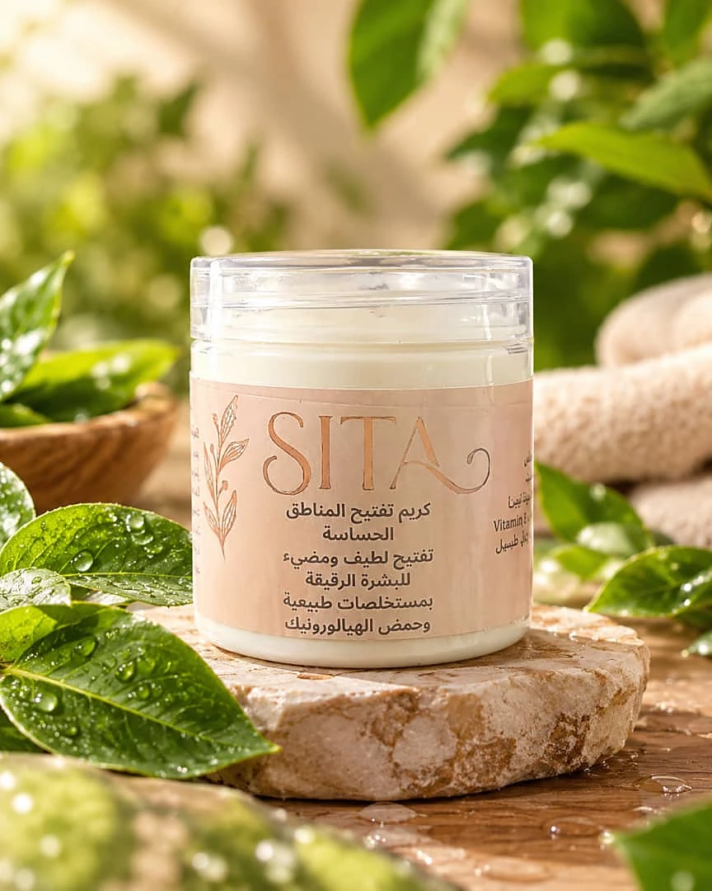

بمكوّن الهيالورونيك تغليف سري باسم SITA
ما بعد الإزالة
زيت بديل الليزر
بعد كل إزالة… بشرة أهدأ ومظهر نمو أقل
1800 دج
مكوّنات طبيعية
تغليف سري
توصيل لكل الولايات
زيت عناية مخصّص للمنطقة بعد إزالة الشعر، يهدّئ البشرة ويدعم مظهراً أكثر نعومة مع الاستخدام المنتظم. تركيبة زيتية خفيفة تُمتص بسهولة دون إحساس ثقيل.
- الطلب مباشرة عبر واتساب — بدون تعبئة استمارة طويلة.
- تغليف سري — لا يظهر اسم المنتج على الطرد.
- استرجاع خلال 14 يوماً وفق السياسة.
مكوّنات طبيعية موثّقة
تغليف سري تماماً
شحن لكل الولايات
استرجاع خلال 14 يوماً
شاهدي المنتج
فيديوهات المنتج
شاهدِي طريقة العرض والتفاصيل عن قرب قبل الطلب.
طلب سريع
اطلب الآن عبر واتسابجاهزة لتجربة زيت بديل الليزر؟
اضغطي الزر وسيتم فتح واتساب مباشرة مع تفاصيل المنتج. أكملي بياناتكِ في الرسالة وأرسليها.
لماذا تختارين هذا المنتج؟
زيت عناية مخصّص للمنطقة بعد إزالة الشعر، يهدّئ البشرة ويدعم مظهراً أكثر نعومة مع الاستخدام المنتظم. تركيبة زيتية خفيفة تُمتص بسهولة دون إحساس ثقيل.
الوعد المختصر
بعد كل إزالة… بشرة أهدأ ومظهر نمو أقل
كيف يعمل؟ علم مبسّط
بعد الإزالة تتعرض الطبقة القرنية لتهيّج بسيط وفقدان للرطوبة. العمل على تهدئة هذه الطبقة وتغليفها بطبقة زيتية رقيقة يساعد على تقليل الاحساس بالشدّ، ويجعل مظهر الشعر الناشئ أقل وضوحاً مع الوقت. هذا هو مبدأ العناية المساعدة — وليس بديلاً طبياً عن جلسات الليزر.
- يُقلّل الإحساس بالتهيّج بعد الحلاقة أو الإزالة.
- يُحسّن نعومة الملمس ترطيب الطبقة السطحية للبشرة.
- يساعد على مظهر نمو أقل وضوحاً عند الانتظام على الاستخدام.
المكوّنات الرئيسية
نذكر ما نعرفه بوضوح، ونحيلكِ إلى القائمة الكاملة المدوّنة على العبوة.
مزيج زيوت نباتية
يُغلف البشرة بطبقة رقيقة تحفظ الرطوبة وتمنح ملمساً ناعماً.
مكوّنات مُهدّئة
تعمل على تلطيف الإحساس بالشدّ بعد الإزالة.
قائمة INCI الكاملة
مدوّنة على العبوة — حدّثيها هنا بالأسماء المعتمدة قبل النشر.
طريقة الاستخدام
نظّفي المنطقة
اغسلي المنطقة بلطف وجفّفيها تماماً بعد الإزالة.
ضعي قطرات قليلة
عدّ ٣–٤ قطرات على راحتكِ ثم دلكي بحركات دائرية خفيفة.
كرّري بانتظام
مرة إلى مرتين يومياً، صباحاً ومساءً، لأفضل مظهر.
قبل البدء: للاستخدام الخارجي فقط. تجنّبي المناطق المفتوحة أو الجروح. إذا ظهر احمرار مستمر، أوقفي الاستخدام واستشيري المختص. هذا المنتج عناية مساعدة وليس بديلاً طبياً لليزر.
ماذا تقول عملاؤنا؟
★★★★★
أخفّ بكثير مما توقعت، والمنطقة بعد الحلاقة صارت أهدأ وأملس خلال أسبوعين.
★★★★★
أعجبني أن العبوة وصلت دون أي اسم للمنتج. الرائحة خفيفة جداً والزيت سريع الامتصاص.
الأسئلة الشائعة
هل يُستخدم مباشرة بعد الحلاقة؟
نعم، بعد غسل المنطقة وتجفيفها بلطف، مع تجنّب الجروح أو البشرة المتهيّجة بشدة.
هل يغني عن جلسات الليزر؟
لا. هو زيت عناية مساعد يهدّئ البشرة ويحسّن المظهر، ولا يُعد بديلاً طبياً عن جلسات الليزر.
كم مرة أستخدمه يومياً؟
مرة إلى مرتين يومياً بعد الإزالة وأثناء فترة العناية.
هل منتجات SITA مناسبة للبشرة الحساسة؟
تركيبتنا مصمّمة للاستخدام الموضعي اللطيف، لكن ننصح دائماً باختبار مساحة صغيرة من البشرة أولاً ومراقبة أي تفاعل خلال 24 ساعة.
متى يمكنني ملاحظة النتيجة؟
الانتظام أهم من الكمية. معظم المستخدمات يلاحظن تحسّناً في ملمس البشرة خلال أول أسبوعين، مع اختلاف النتيجة من بشرة لأخرى.
هل يمكن الاستخدام أثناء الحمل أو الرضاعة؟
ننصح باستشارة الطبيب المختص قبل استخدام أي منتج عناية جديد أثناء الحمل أو الرضاعة.
SITA
اطلب عبر واتساباطلبي زيت بديل الليزر الآن
تغليف سري، توصيل لكل الولايات، ودفع عند الاستلام.
قد يعجبكِ أيضاً
منتجات مكمّلة
 خصوصية تامة
تغليف سري باسم SITA
خصوصية تامة
تغليف سري باسم SITA